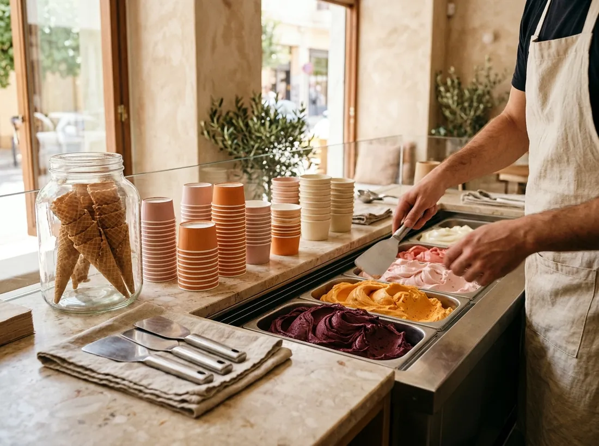

Εργαλεία
Εργαλεία Ξυλάκια
Ξυλάκια Φτιάξε το δικό σου μίγμα
Φτιάξε το δικό σου μίγμαΗλιάνα Φ.πριν 2 μήνες
★★★★★
Δοκίμασα το φιστίκι και δεν μπόρεσα να αγοράσω άλλο από τότε. Στο μαγαζί μου εξήγησαν με υπομονή τι διαφέρει από το έτοιμο. Ήρθε παγωμένο, άψογο!
Από το 2016 στη FRIVOLO φτιάχνουμε gelato και sorbetto με λίγα υλικά και μπόλικη επιμονή, γιατί πιστεύουμε πως η ελαφρότητα είναι σοβαρή υπόθεση!
Μάθε περισσότεραΣτη FRIVOLO φροντίζουμε κάθε στάδιο, από το πρωινό τηλεφώνημα στον παραγωγό μέχρι τη στιγμή που το κουτάλι χτυπά στον πάτο. Επιλέγουμε λίγα, ονομαστικά υλικά και τα δουλεύουμε την ίδια μέρα.
Η FRIVOLO ξεκίνησε το 2016 από έναν κάδο, δύο φίλους και ένα πολύ μικρό υπόγειο στην οδό Πραξιτέλους. Το πρώτο gelato ήταν φιστίκι. Ήταν και το δεύτερο, και το τρίτο.
Σήμερα το εργαστήριο βγάζει έως 24 γεύσεις την εβδομάδα, σε μικρές παρτίδες, με σύστημα ιχνηλασιμότητας από το χωράφι μέχρι το καπάκι. Κάθε κουτί γράφει ποιος το έφτιαξε.
Στις εγκαταστάσεις μας στο κέντρο της Αθήνας η θερμοκρασία είναι το μόνο πράγμα που παίρνουμε τοις μετρητοίς. Παστερίωση στους 85 °C, ωρίμανση στους 4, κάδος στους –9, κατάψυξη στους –40.
Το δίκτυο ψυγείων μας κρατά το gelato σταθερό μέχρι την πόρτα σου, ώστε να το δοκιμάσεις όπως το δοκιμάσαμε κι εμείς.

Στη FRIVOLO είμαστε πάντα δίπλα
σε εσάς και στην παρέα σας!
Στη FRIVOLO πιστεύουμε πως το γλυκό δεν χρειάζεται δικαιολογία. Χρειάζεται όμως καλό γάλα, ώριμο φρούτο και κάποιον που να ενδιαφέρεται.
Δοκίμασα το φιστίκι και δεν μπόρεσα να αγοράσω άλλο από τότε. Στο μαγαζί μου εξήγησαν με υπομονή τι διαφέρει από το έτοιμο. Ήρθε παγωμένο, άψογο!
Παραγγείλαμε για γιορτή 14 ατόμων με τον υπολογιστή ποσότητας και βγήκε ακριβώς. Ούτε κουταλιά περισσευούμενη.
Επιτέλους sorbetto λεμόνι που έχει γεύση λεμόνι. Η κόρη μου με αλλεργία στο γάλα το λατρεύει.
Έφτιαξα δικό μου μίγμα με μύρτιλο και σοκολάτα. Το έβαλαν σε κουτί με το όνομα που διάλεξα. Τέλειο δώρο.
Η τούρτα φουντούκι έσωσε τα γενέθλια. Όλοι ρωτούσαν από πού την πήρα.
Έρχομαι από τη Γλυφάδα μόνο για τη στρατσιατέλα. Αξίζει κάθε φανάρι.
Γρήγορη παράδοση, σωστή συσκευασία με ξηρό πάγο, ευγενέστατα παιδιά.
Απλά υλικά και το καταλαβαίνεις με την πρώτη κουταλιά. Μπράβο σας.
Ό,τι χρειάζεται να ξέρεις για το gelato, τα υλικά μας και το πώς να το απολαύσεις. Είμαστε εδώ για να κάνουμε την αρχή γλυκιά.
Δες όλες τις ερωτήσεις